| 地区 | 人口数/男 | 人口数/女 | 性别比（女=100） | 区域 |
|---|---|---|---|---|
| 北京 | 8937161 | 8814520 | 101.39 | 城市 |
| 天津 | 5610161 | 5322931 | 105.40 | 城市 |
| 河北 | 11010407 | 11119188 | 99.02 | 城市 |
| 山西 | 6588788 | 6608849 | 99.70 | 城市 |
| 内蒙古 | 4714495 | 4731924 | 99.63 | 城市 |
| 辽宁 | 12626419 | 12946058 | 97.53 | 城市 |
8 统计图形
- 章节 8.1 探索、展示数据中隐含的分布信息，具体有箱线图、提琴图、直方图、密度图、岭线图和抖动图。
- 章节 8.2 探索、展示数据中隐含的相关信息，这种相关具有一般性，比如线性和非线性相关，位序关系、包含关系、依赖关系等，具体有散点图、气泡图、凹凸图、韦恩图、甘特图和网络图。
- 章节 8.3 探索、展示数据中隐含的不确定性，统计中描述不确定性有很多概念，比如置信区间、假设检验中的 P 值，统计模型中的预测值及其预测区间，模型残差隐含的分布，模型参数分量的边际分布及其效应，贝叶斯视角下的模型参数的后验分布。
8.1 描述分布
数据来自中国国家统计局发布的2021年统计年鉴，各省、直辖市和自治区分区域的性别比数据（部分）情况见 表格 8.1 。
8.1.1 箱线图
library(ggplot2)
ggplot(data = province_sex_ratio, aes(x = `区域`, y = `性别比（女=100）`)) +
geom_boxplot() +
theme_classic()
ggplot(data = province_sex_ratio, aes(x = `区域`, y = `性别比（女=100）`)) +
geom_boxplot(outlier.colour = "red") +
theme_classic()
library(lvplot)
ggplot(data = province_sex_ratio, aes(x = `区域`, y = `性别比（女=100）`)) +
geom_lv() +
theme_classic()
boxplot(`性别比（女=100）` ~ `区域` , data = province_sex_ratio)
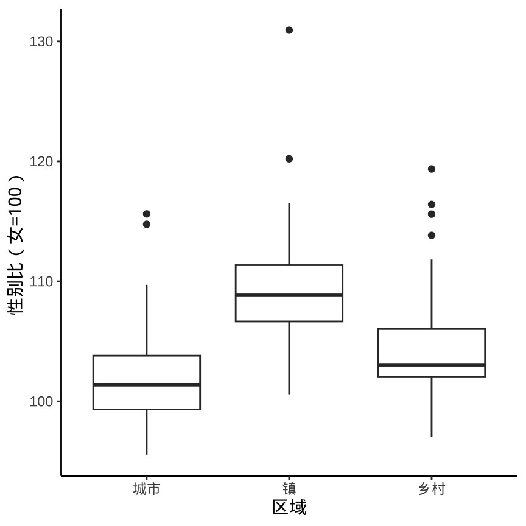
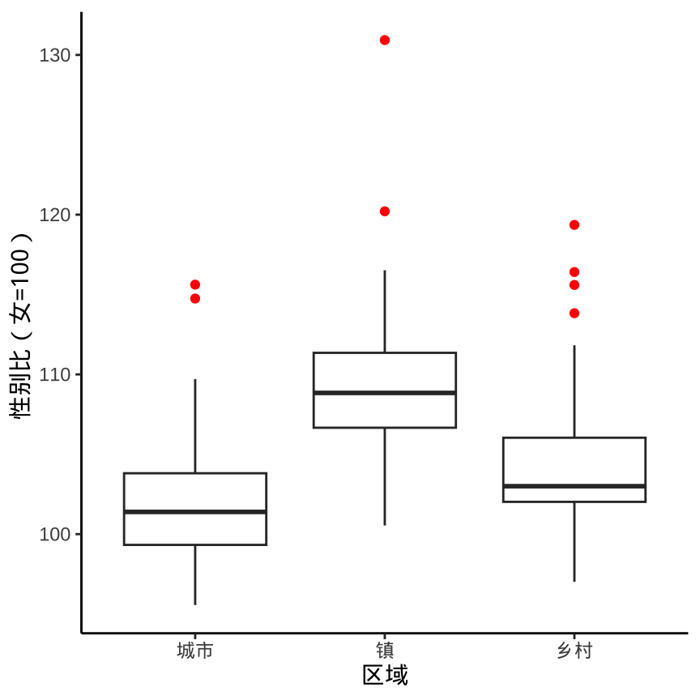
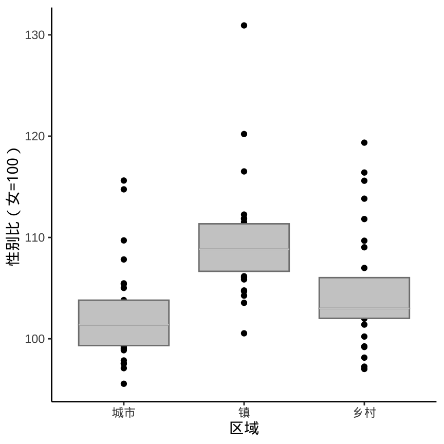
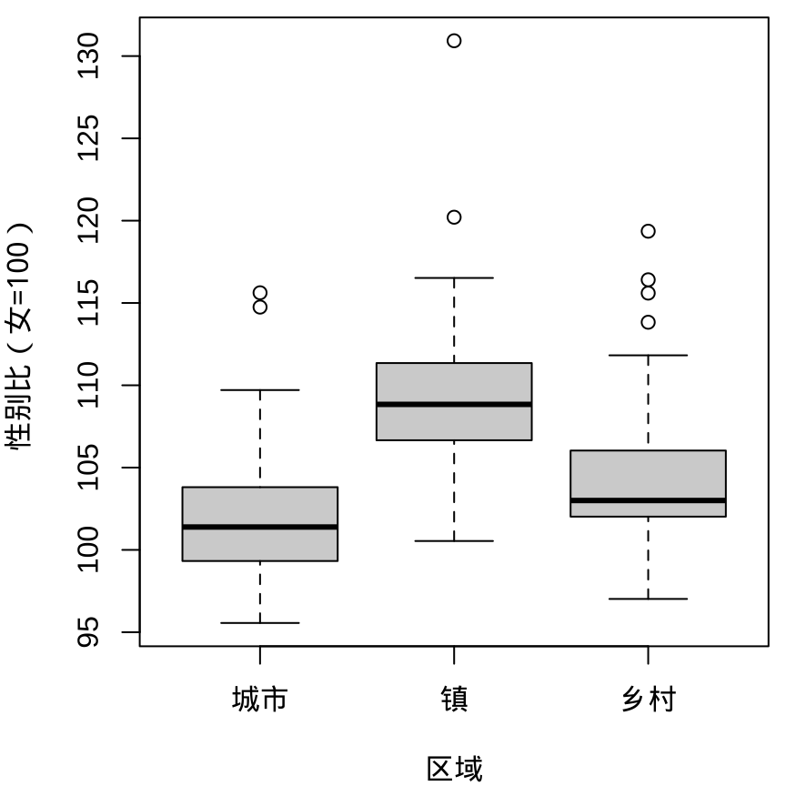
箱线图的历史有 50 多年了，它的变体也有很多，除了 ggplot2 包，lvplot 包也可以绘制箱线图的变体 (McGill 和 Larsen 1978)。更多详情见 Hadley Wickham 和 Lisa Stryjewski 的文章 40 years of boxplots。
8.1.2 提琴图
ggplot(data = province_sex_ratio, aes(x = `区域`, y = `性别比（女=100）`)) +
geom_violin(fill = "lightgray") +
theme_classic()
ggplot(data = province_sex_ratio, aes(x = `区域`, y = `性别比（女=100）`)) +
geom_violin(fill = "lightgray", draw_quantiles = c(0.25, 0.5, 0.75)) +
theme_classic()
vioplot::vioplot(`性别比（女=100）` ~ `区域`,
data = province_sex_ratio, col = "lightgray")
beanplot::beanplot(`性别比（女=100）` ~ `区域`,
data = province_sex_ratio, col = "lightgray", log = "",
xlab = "区域", ylab = "性别比（女=100）")
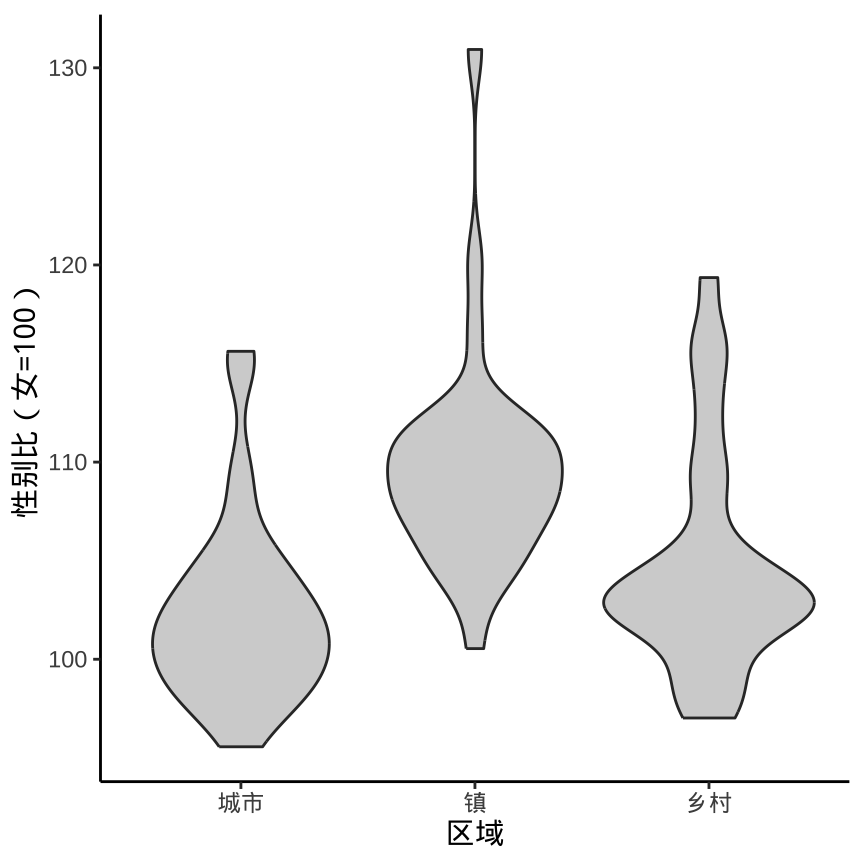
geom_violin()
geom_violin() 标记分位点
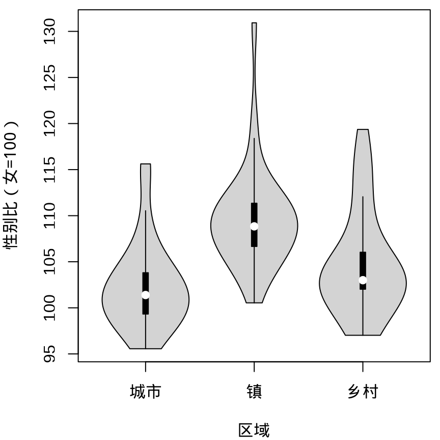
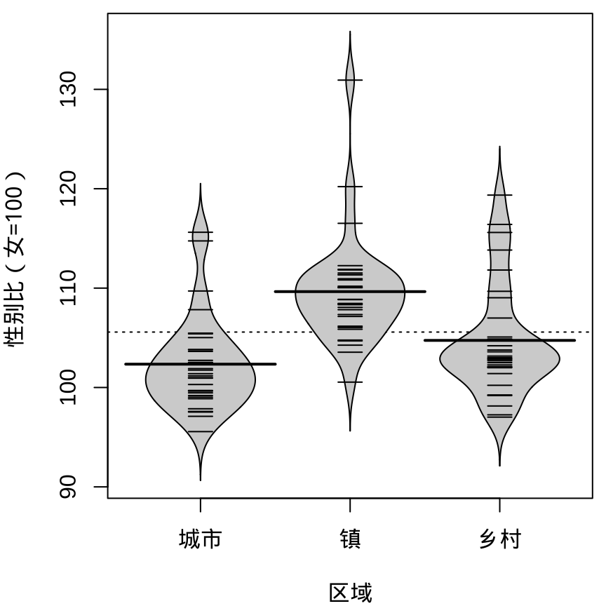
beanplot 包的名字是根据图形的外观取的，bean 即是豌豆，rug 用须线表示数据。
8.1.3 直方图
ggplot2 包绘制直方图的函数是 geom_histogram() ，而与之相关的函数 geom_freqpoly() 是绘制折线图，将直方图中每个柱子的顶点连接起来。
ggplot(data = province_sex_ratio, aes(x = `性别比（女=100）`, fill = `区域`)) +
geom_histogram(binwidth = 5, color = "white", position = "stack") +
scale_fill_grey() +
theme_classic() +
theme(legend.position = "inside", legend.position.inside = c(0.9, 0.8)) +
labs(y = "频数")
ggplot(data = province_sex_ratio, aes(x = `性别比（女=100）`, color = `区域`)) +
geom_freqpoly(binwidth = 5, stat = "bin", position = "stack") +
scale_color_grey() +
theme_classic() +
theme(legend.position = "inside", legend.position.inside = c(0.9, 0.8))
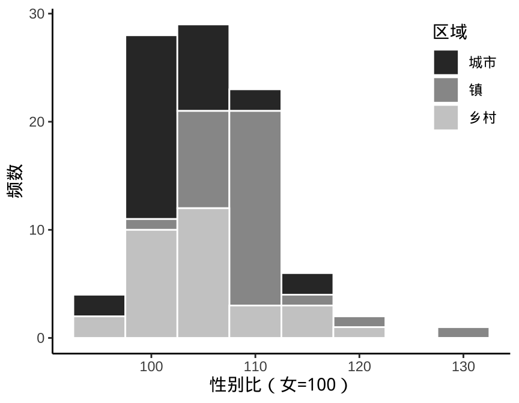
geom_histogram()
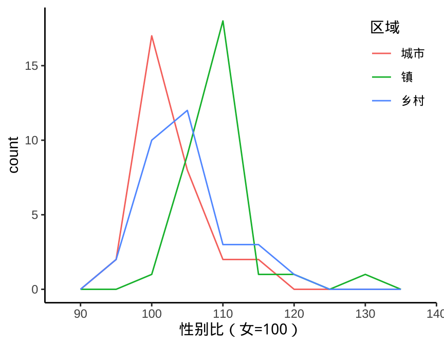
geom_freqpoly()
8.1.4 密度图
ggplot2 包绘制密度图的函数是 geom_density()， 图 8.4 展示分组密度曲线图
ggplot(data = province_sex_ratio, aes(x = `性别比（女=100）`)) +
geom_density(aes(fill = `区域`), alpha = 0.75) +
scale_fill_grey() +
theme_classic()
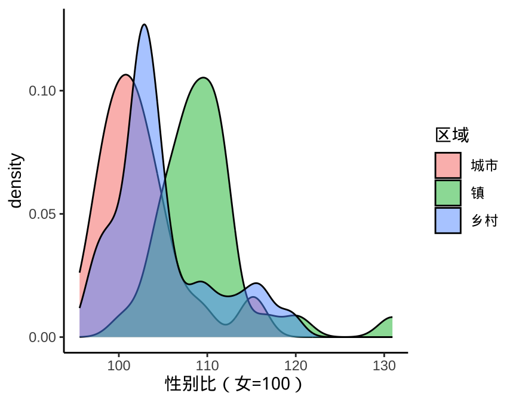
8.1.4.1 堆积（条件）密度图
注意
Stacked density plots: if you want to create a stacked density plot, you probably want to ‘count’ (density * n) variable instead of the default density
堆积密度图正确的绘制方式是保护边际密度。
ggplot(data = province_sex_ratio, aes(x = `性别比（女=100）`, y = after_stat(density))) +
geom_density(aes(fill = `区域`), position = "stack", alpha = 0.5) +
scale_fill_grey() +
theme_classic() +
theme(legend.position = "inside", legend.position.inside = c(0.9, 0.8))
ggplot(data = province_sex_ratio, aes(x = `性别比（女=100）`, y = after_stat(density * n))) +
geom_density(aes(fill = `区域`), position = "stack", alpha = 0.5) +
scale_fill_grey() +
theme_classic() +
theme(legend.position = "inside", legend.position.inside = c(0.9, 0.8))
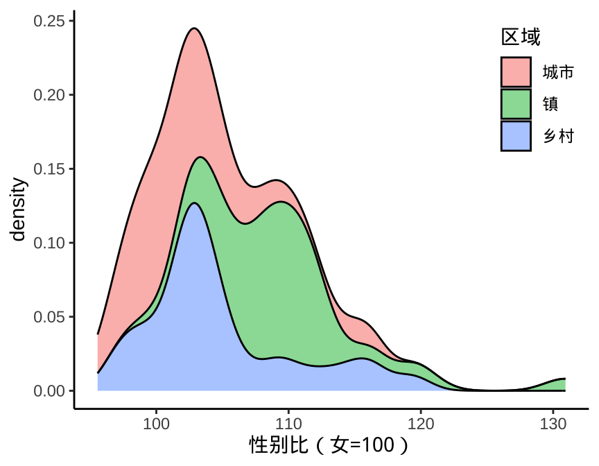
after_stat(density)
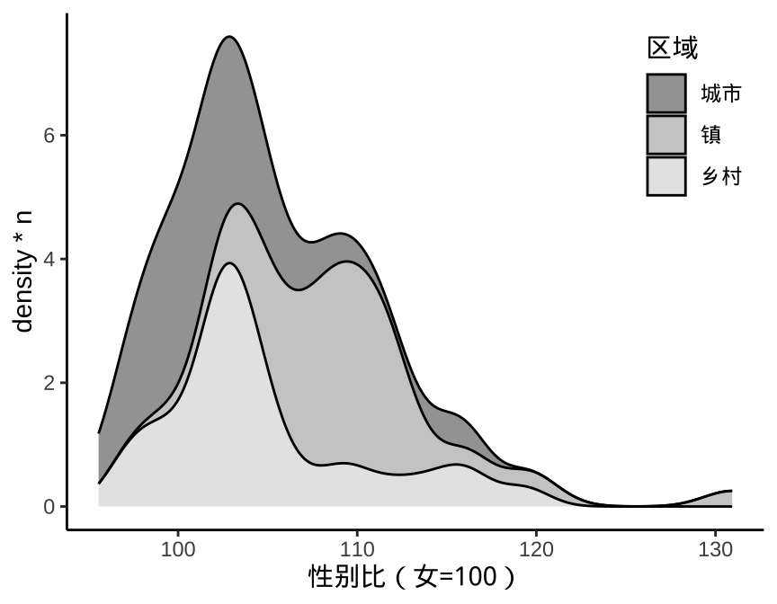
after_stat(density * n)
什么原因导致 图 8.5 中两个子图看起来没什么差别呢？而换一组数据，就可以看出明显的差别。
ggplot(diamonds, aes(x = carat, y = after_stat(density), fill = cut)) +
geom_density(position = "stack") +
scale_fill_grey() +
theme_classic() +
theme(legend.position = "inside", legend.position.inside = c(0.8, 0.7)) +
labs(x = "克拉", y = "频数", fill = "切工")
ggplot(diamonds, aes(x = carat, y = after_stat(density * n), fill = cut)) +
geom_density(position = "stack") +
scale_fill_grey() +
scale_y_continuous(
breaks = c(25000, 50000, 75000),
labels = c("25K", "50K", "75K")) +
theme_classic() +
theme(legend.position = "inside", legend.position.inside = c(0.8, 0.7)) +
labs(x = "克拉", y = "频数", fill = "切工")
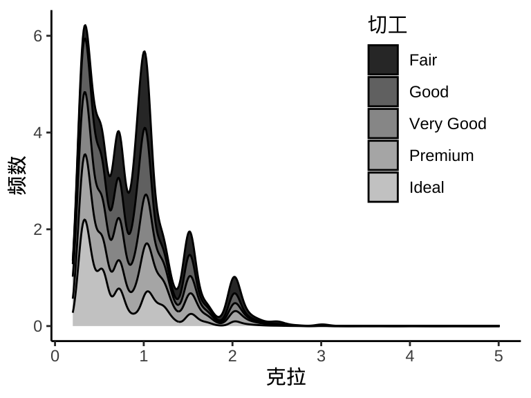
after_stat(density)
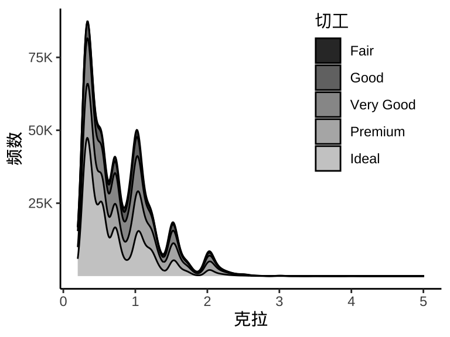
after_stat(density * n)
8.1.4.2 联合密度图
state_x77 <- data.frame(state.x77, state_name = rownames(state.x77),
state_region = state.region, check.names = FALSE)
p1 <- ggplot(data = state_x77, aes(x = Income, y = `Life Exp`)) +
geom_point() +
geom_density_2d(
aes(color = after_stat(level), alpha = after_stat(level)), show.legend = F
) +
scale_color_distiller(palette = "Greys") +
labs(
x = "人均收入（美元）", y = "预期寿命（年）",
title = "1977 年各州预期寿命与人均收入的关系",
caption = "数据源：美国人口调查局"
) +
theme_classic()
p1
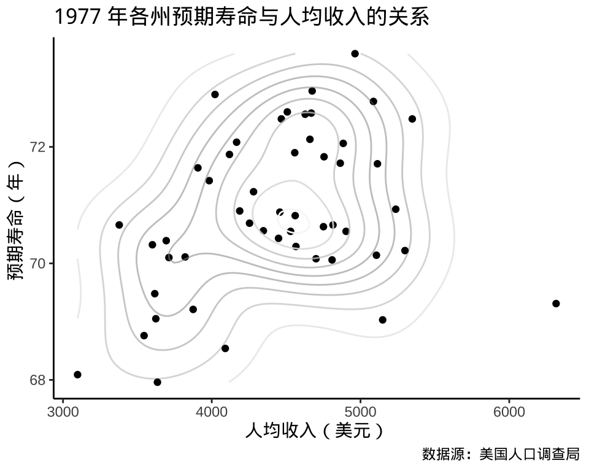
8.1.4.3 边际密度图
ggExtra 包(Attali 和 Baker 2022) 添加边际密度曲线和边际直方图。
8.1.4.4 填充密度图
ggplot2 包提供二维密度图层 geom_density_2d_filled() 绘制热力图， ggdist (Kay 2022) 进行了一些扩展。
ggplot(data = state_x77, aes(x = Income, y = `Life Exp`)) +
geom_density_2d_filled(contour_var = "count") +
theme_classic() +
labs(
x = "人均收入（美元）", y = "预期寿命（年）",
title = "1977 年各州预期寿命与人均收入的关系",
caption = "数据源：美国人口调查局"
)
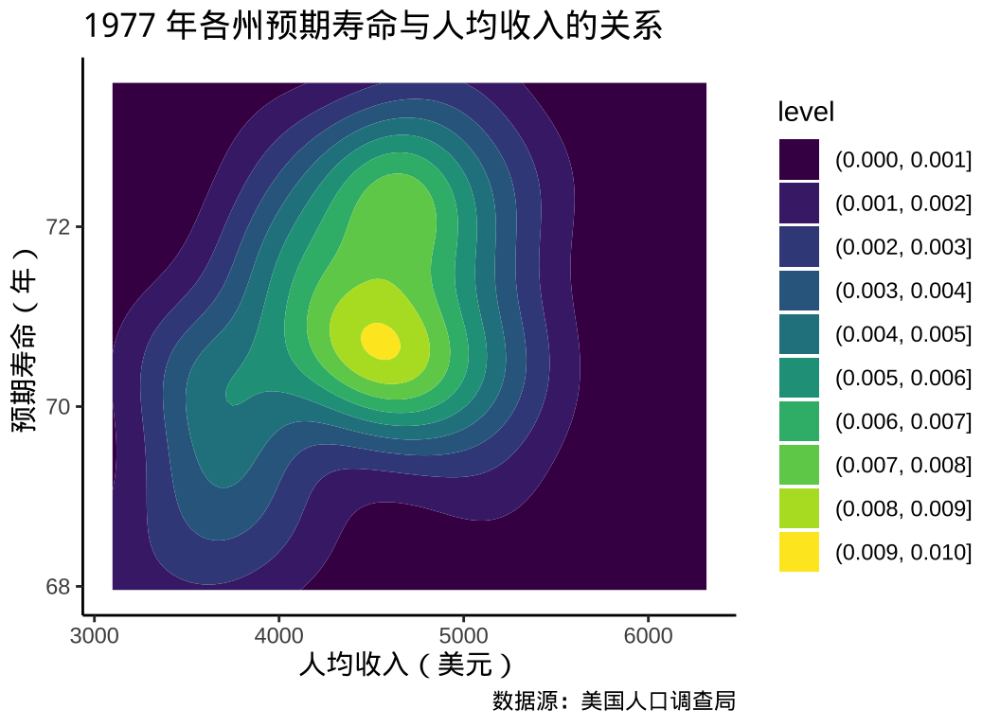
相比于 ggplot2 内置的二维核密度估计，ggdensity (Otto 和 Kahle 2023) 有一些优势，根据数据密度将目标区域划分，更加突出层次和边界。gghdr 包与 ggdensity 类似，展示 highest density regions (HDR)

8.1.5 岭线图
叠嶂图，还有些其它名字，如峰峦图、岭线图等，详情参考统计之都主站《叠嶂图的前世今生》，主要用来描述数据的分布情况，在展示分布的对比上效果非常好。
图 8.11 设置窗宽为 1.5 个百分点
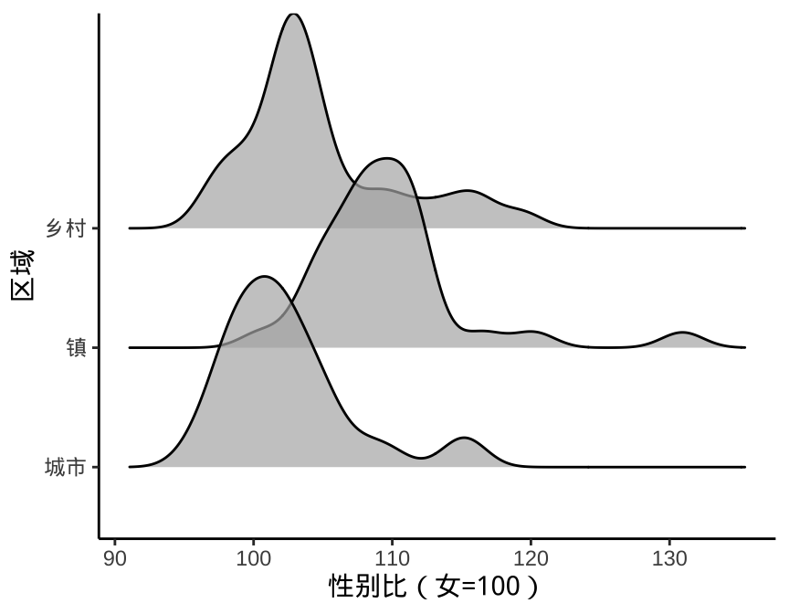
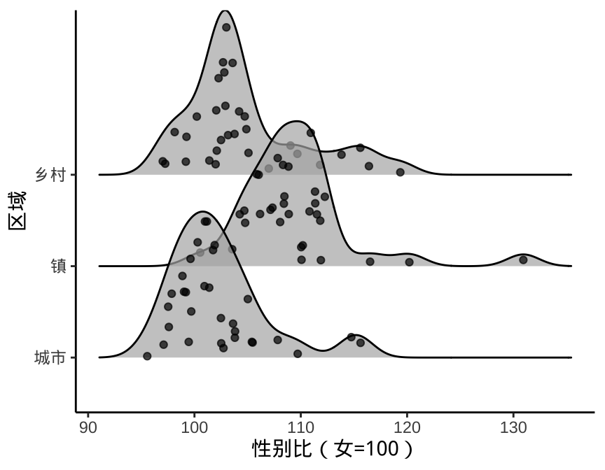
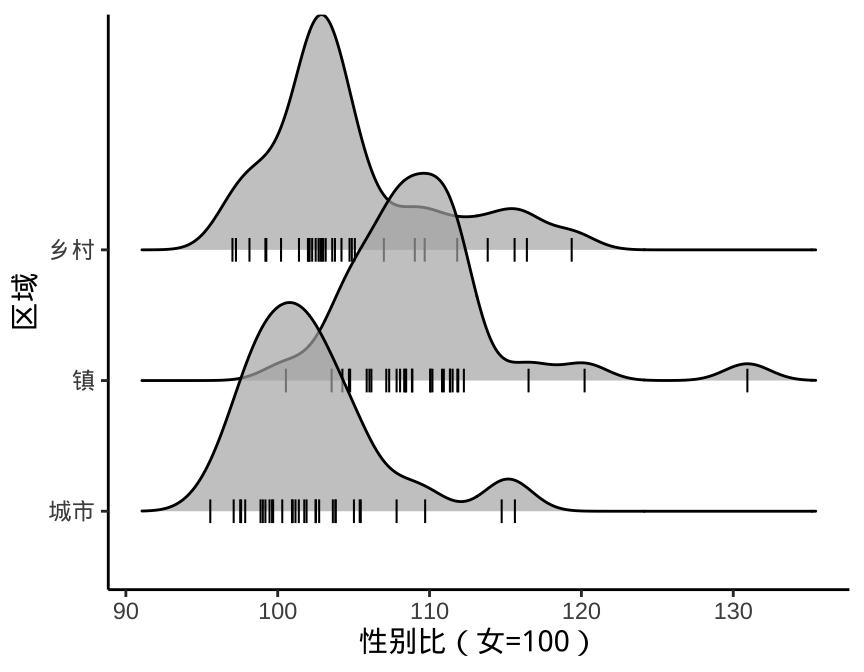
提示
除了中国国家统计年鉴，各省、自治区、直辖市及各级统计局每年都会发布一些统计年鉴、公告等数据，读者可以在此基础上继续收集更多数据，来分析诸多有意思的问题：
- 城市、镇和乡村男女性别比呈现差异化分布的成因。
- 城市、镇和乡村男女年龄构成。
- 将上述问题从省级下钻到市、县级来分析。
8.1.6 抖动图
下面先用函数 geom_point() 绘制散点图展示原始数据，通过点的疏密程度暗示数据的分布。Base R 函数 stripchart() 可以实现类似的效果。当数据量比较大时，点相互覆盖比较严重，此时，抖动图比较适合用来展示原始数据。函数 geom_beeswarm() 提供了另一种散点的组织方式，按一定的规则，而不是近似随机的方式组织。
ggplot(data = province_sex_ratio, aes(x = `区域`, y = `性别比（女=100）`)) +
geom_point() +
theme_classic()
stripchart(
`性别比（女=100）` ~ `区域`, vertical = TRUE, pch = 1,
data = province_sex_ratio, xlab = "区域")
ggplot(data = province_sex_ratio, aes(x = `区域`, y = `性别比（女=100）`)) +
geom_jitter(width = 0.25) +
theme_classic()
library(ggbeeswarm)
ggplot(data = province_sex_ratio, aes(x = `区域`, y = `性别比（女=100）`)) +
geom_beeswarm() +
theme_classic()
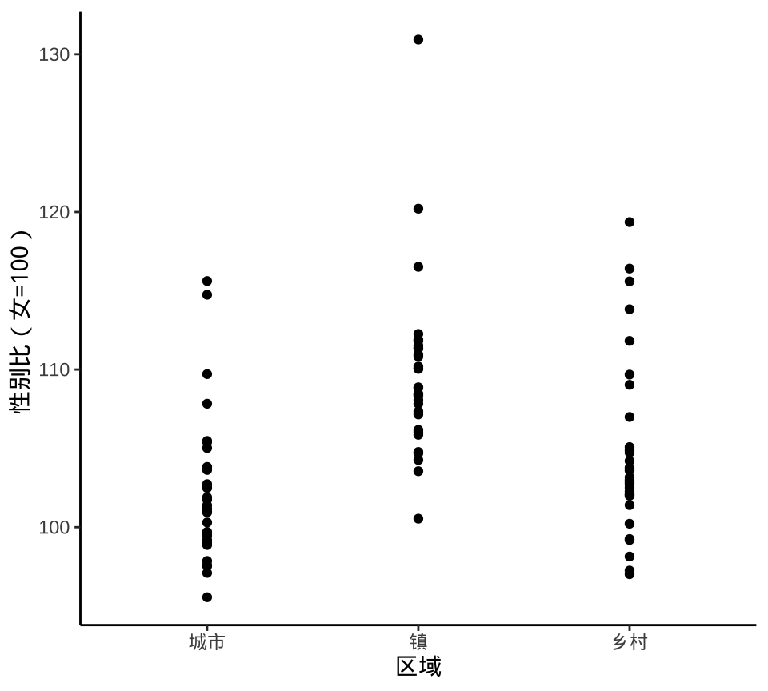
geom_point()
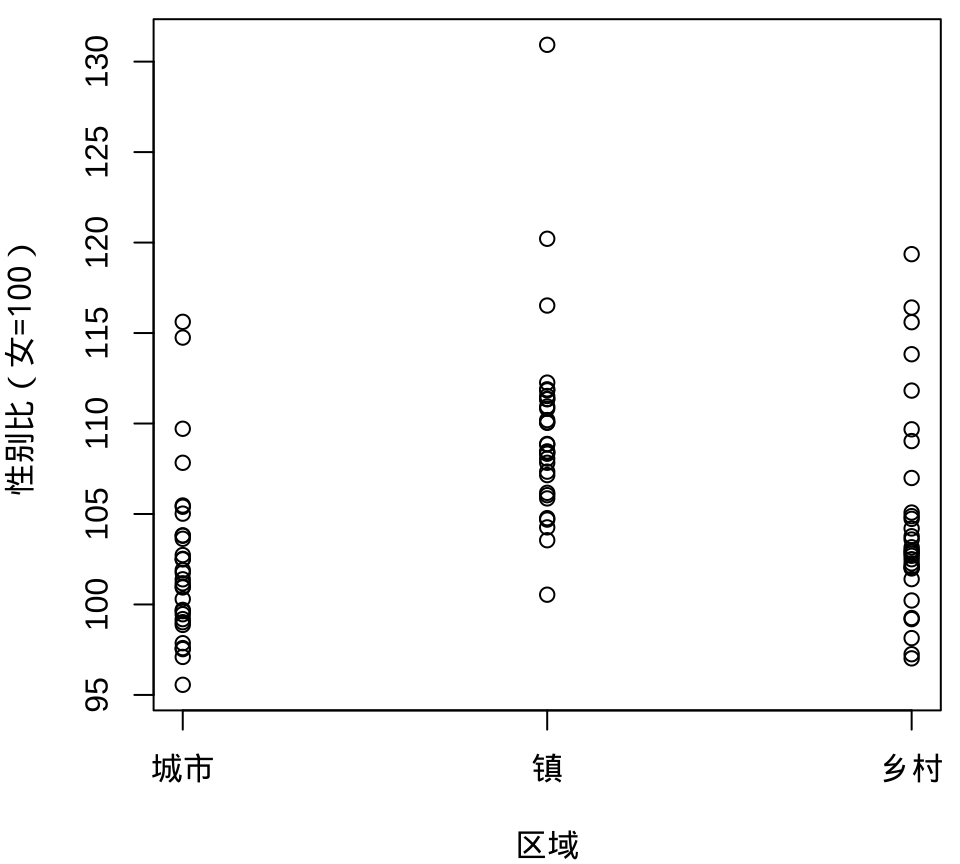
stripchart()

geom_jitter()
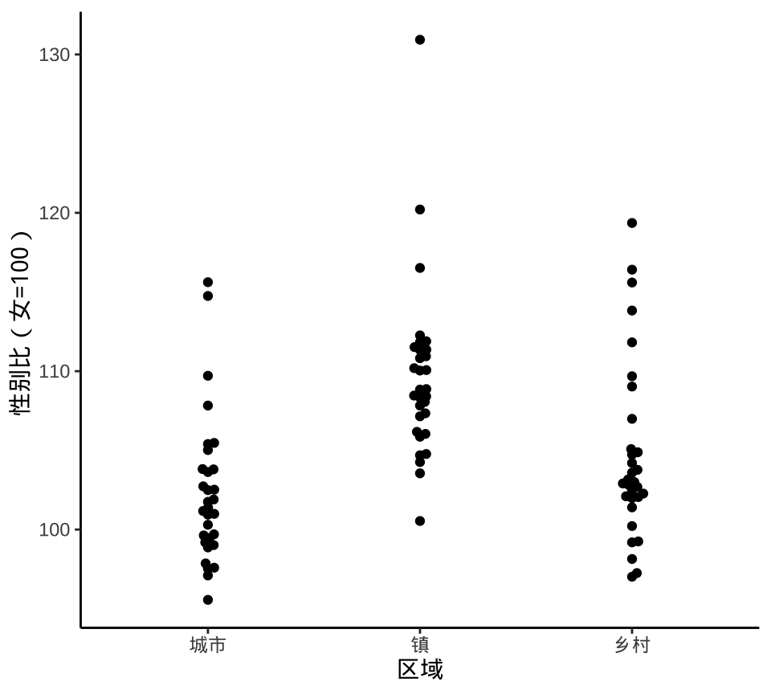
geom_beeswarm()
Sidiropoulos 等 (2018) 提出一种新的方式描述数据的分布，集合抖动图和小提琴图的功能，在给定的分布界限内抖动。数据点受 violin 的曲线限制，蜂群图也是某种形式的抖动图，添加 violin 作为参考边界，与 sina 图是非常类似的。
library(ggforce)
ggplot(data = province_sex_ratio, aes(x = `区域`, y = `性别比（女=100）`)) +
geom_sina() +
theme_classic()
ggplot(data = province_sex_ratio, aes(x = `区域`, y = `性别比（女=100）`)) +
geom_violin() +
geom_sina() +
theme_classic()
library(ggbeeswarm)
ggplot(data = province_sex_ratio, aes(x = `区域`, y = `性别比（女=100）`)) +
geom_quasirandom() +
theme_classic()
ggplot(data = province_sex_ratio, aes(x = `区域`, y = `性别比（女=100）`)) +
geom_violin() +
geom_quasirandom() +
theme_classic()
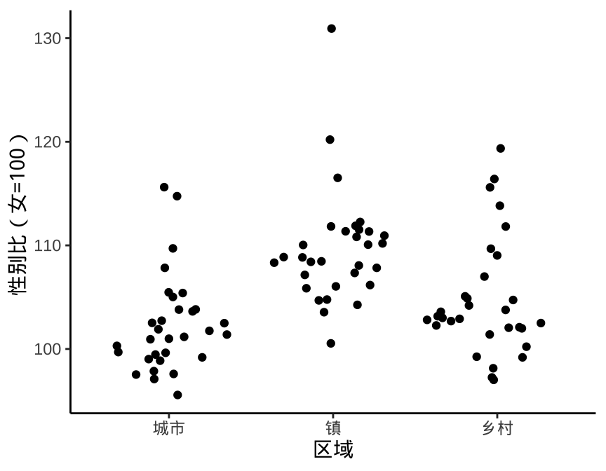
geom_sina()
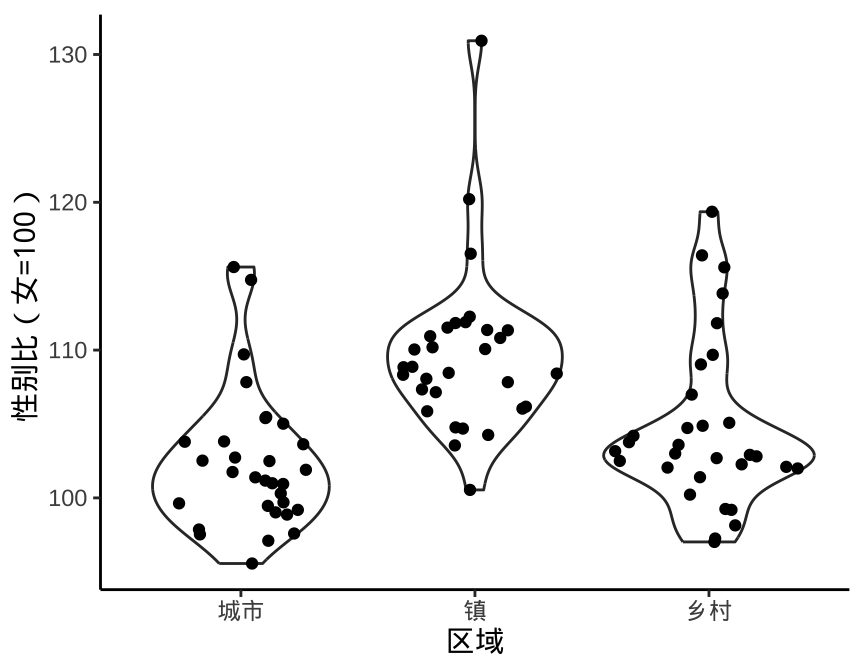
geom_sina() 叠加函数 geom_violin()
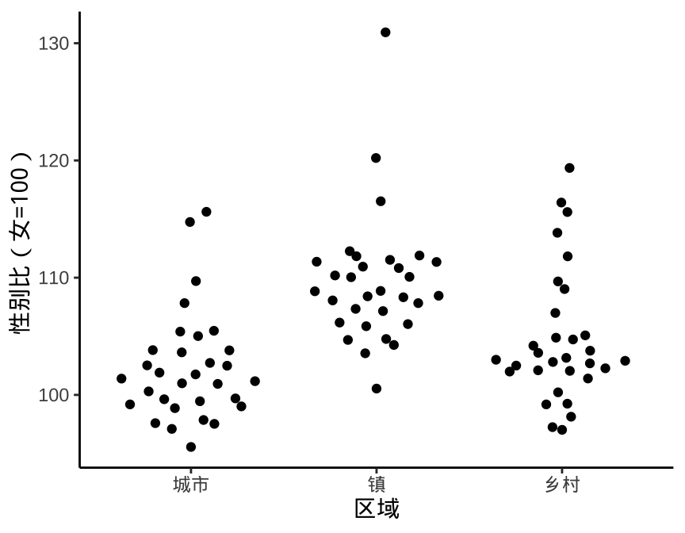
geom_quasirandom()
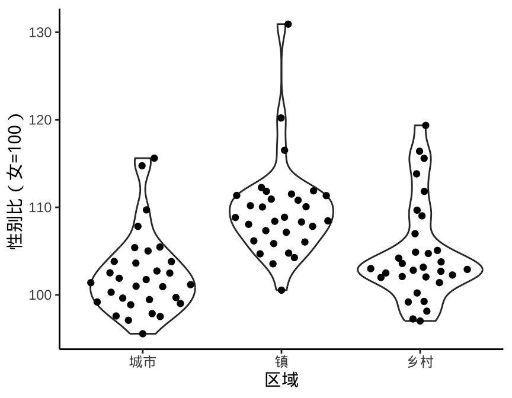
geom_quasirandom() 叠加函数 geom_violin()
8.2 描述关系
8.2.1 散点图
散点图用以描述变量之间的关系，展示原始的数据，点的形态、大小、颜色等都可以随更多变量变化。
中国国家统计局 2021 年发布的统计年鉴，2020 年 31 个省、直辖市、自治区的抚养比、文盲率、人口数的关系。
| 地区 | 人口数 | 15-64岁 | 抚养比 | 15岁及以上人口 | 文盲人口 | 文盲率 |
|---|---|---|---|---|---|---|
| 广东 | 126012510 | 91449628 | 37.79 | 102262628 | 1826344 | 1.79 |
| 山东 | 101527453 | 67100737 | 51.31 | 62464815 | 3308280 | 4.01 |
| 河南 | 99365519 | 62974661 | 57.79 | 76376565 | 2228594 | 2.92 |
| 江苏 | 84748016 | 58129537 | 45.79 | 71856068 | 2211291 | 3.08 |
| 四川 | 83674866 | 56036154 | 49.32 | 70203754 | 3330733 | 4.74 |
| 河北 | 74610235 | 49133330 | 51.85 | 59521267 | 1128423 | 1.90 |
其中，文盲人口是指15岁及以上不识字及识字很少人口，文盲率 = 文盲人口 / 15岁及以上人口，抚养比 = (0-14岁 + 65岁及以上) / 15-64岁人口数。
8.2.2 气泡图
气泡图在散点图的基础上，添加了散点大小的视觉维度，可以在图上多展示一列数据，下 图 8.15 新增了人口数变量。此外，在气泡旁边添加地区名称，将气泡填充的颜色也映射给了人口数变量。
library(ggrepel)
library(scales)
ggplot(
data = china_raise_illiteracy,
aes(x = `总抚养比`, y = `文盲人口占15岁及以上人口的比重`)
) +
geom_point(aes(size = `人口数`, color = `人口数`),
alpha = 0.85, pch = 16,
show.legend = c(color = FALSE, size = TRUE)
) +
scale_size(labels = label_number(scale_cut = cut_short_scale())) +
scale_color_viridis_c(option = "C") +
geom_text_repel(
aes(label = `地区`), size = 3, max.overlaps = 50,
segment.colour = "gray", seed = 2022, show.legend = FALSE
) +
coord_cartesian(xlim = c(30, 60), ylim = c(0, 10.5), expand = FALSE) +
theme_classic() +
labs(x = "抚养比（%）", y = "文盲率（%）")
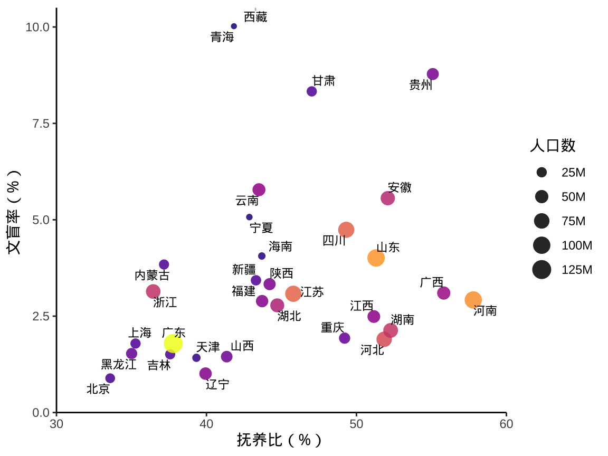
8.2.3 凹凸图
凹凸图描述位置排序关系随时间的变化，比如前年、去年和今年各省的 GDP 排序变化，春节各旅游景点的人流量变化。ggbump 包专门用来绘制凹凸图，如 图 8.16 所示，展示
library(ggbump)
# 位置排序变化
df <- data.frame(
country = c(
"印度", "印度", "印度", "瑞典",
"瑞典", "瑞典", "德国", "德国",
"德国", "芬兰", "芬兰", "芬兰"
),
year = c(
2018, 2019, 2020, 2018, 2019, 2020,
2018, 2019, 2020, 2018, 2019, 2020
),
value = c(
492, 246, 246, 369, 123, 492,
246, 369, 123, 123, 492, 369
)
)
library(data.table)
df <- as.data.table(df)
df[, rank := rank(value, ties.method = "random"), by = "year"]
ggplot(df, aes(year, rank, color = country)) +
geom_point(size = 7) +
geom_text(data = df[df$year == min(df$year), ],
aes(x = year - .1, label = country), size = 5, hjust = 1) +
geom_text(data = df[df$year == max(df$year), ],
aes(x = year + .1, label = country), size = 5, hjust = 0) +
geom_bump(linewidth = 2, smooth = 8) +
scale_x_continuous(limits = c(2017.6, 2020.4), breaks = seq(2018, 2020, 1)) +
theme_minimal(base_size = 14) +
theme(legend.position = "none", panel.grid.major = element_blank()) +
labs(x = NULL, y = "排名") +
scale_y_reverse() +
coord_fixed(ratio = 0.5)
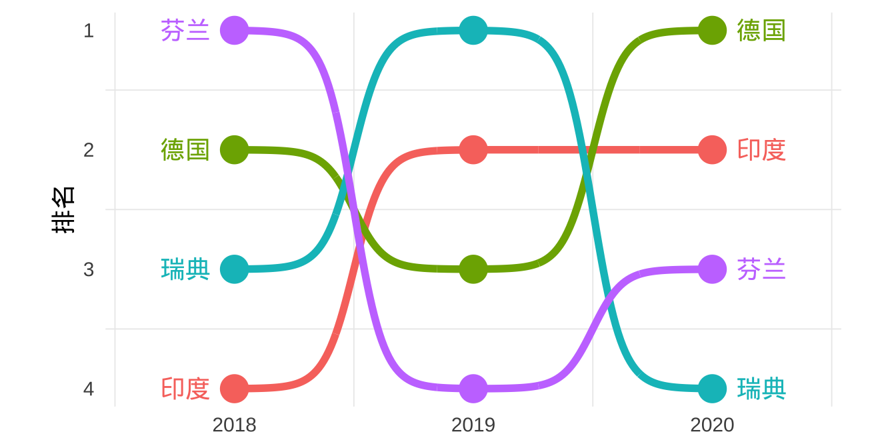
8.2.4 韦恩图
韦恩图描述集合、群体的交叉关系，整体和部分的包含关系，ggVennDiagram 包展示 A、B、C 三个集合的交叉关系，如 图 8.17 所示
8.2.5 网络图
tidygraph 包基于 igraph 包操作图数据，计算网络图中节点重要性，ggraph包基于 ggplot2 包可视化网络关系。
#> 'data.frame': 506 obs. of 3 variables:
#> $ from: num 1 1 1 1 1 2 2 3 3 4 ...
#> $ to : num 14 15 21 54 55 21 22 9 15 5 ...
#> $ year: num 1957 1957 1957 1957 1957 ...highschool 是一个数据框类型的数据，记录了1957 年和 1958 年一些高中男生之间的关系，在数据集中，这些男生被编码成数字 1-71。
#> from to year
#> 1 1 14 1957
#> 2 1 15 1957
#> 3 1 21 1957
#> 4 1 54 1957
#> 5 1 55 1957
#> 244 1 15 1958
#> 245 1 21 1958
#> 246 1 22 19581 号男生在 1957 年与 14、15、21、54、55 男生关系密切，到了 1958 年，他与 15、21、22 关系比较密切。tidygraph 包在 igraph 的基础上，可以对图数据进行操作，下面先将数据框转化为图，然后计算中心度，作为高中生的受欢迎程度。
graph <- tidygraph::as_tbl_graph(highschool, directed = TRUE) |>
dplyr::mutate(Popularity = tidygraph::centrality_degree(mode = 'in'))
graph#> # A tbl_graph: 70 nodes and 506 edges
#> #
#> # A directed multigraph with 1 component
#> #
#> # Node Data: 70 × 1 (active)
#> Popularity
#> <dbl>
#> 1 2
#> 2 0
#> 3 0
#> 4 4
#> 5 5
#> 6 2
#> 7 2
#> 8 3
#> 9 4
#> 10 4
#> # ℹ 60 more rows
#> #
#> # Edge Data: 506 × 3
#> from to year
#> <int> <int> <dbl>
#> 1 1 13 1957
#> 2 1 14 1957
#> 3 1 20 1957
#> # ℹ 503 more rows8.3 描述不确定性
统计是一门研究不确定性的学科，由不确定性引出许多的基本概念，比如用置信区间描述点估计的不确定性，用覆盖概率描述区间估计方法的优劣。下面以二项分布参数的点估计与区间估计为例，通过可视化图形介绍这一系列统计概念。就点估计来说，描述不确定性可以用标准差、置信区间。
- Michael Friendly 2021 年的课程 Psychology of Data Visualization
- Claus O. Wilke 2023 年的课程 SDS 375 Schedule Spring 2023
8.3.1 置信区间
| 0 | 1 | 2 | \(\cdots\) | n |
|---|---|---|---|---|
| \(p_0\) | \(p_1\) | \(p_2\) | \(\cdots\) | \(p_n\) |
二项分布 \(\mathrm{Binomial}(n,p)\) 的参数 \(p\) 的精确区间估计如下：
\[ \big(\mathrm{Beta}(\frac{\alpha}{2}; x, n-x+1), \mathrm{Beta}(1-\frac{\alpha}{2}; x+1, n-x)\big) \tag{8.1}\]
其中， \(x\) 表示成功次数，\(n\) 表示实验次数，\(\mathrm{Beta}(p;v,w)\) 表示形状参数为 \(v\) 和 \(w\) 的 Beta 贝塔分布的 \(p\) 分位数，参数 \(p\) 的置信区间的上下限 \(P_L,P_U\) 满足
\[ \begin{aligned} \frac{\Gamma(n+1)}{\Gamma(x)\Gamma(n-x+1)}\int_{0}^{P_L}t^{x-1}(1-t)^{n-x}\mathrm{dt} &= \frac{\alpha}{2} \\ \frac{\Gamma(n+1)}{\Gamma(x+1)\Gamma(n-x)}\int_{0}^{P_U}t^{x}(1-t)^{n-x-1}\mathrm{dt} &= 1-\frac{\alpha}{2} \end{aligned} \]
\(p_x\) 表示二项分布 \(\mathrm{Binomial}(n,p)\) 第 \(x\) 项的概率，\(x\) 的取值为 \(0,1,\cdots,n\)
\[p_x = \binom{n}{x}p^x(1-p)^{n-x}, \quad x = 0,1,\cdots,n\]
二项分布的累积分布函数和 \(S_k\) 表示前 \(k\) 项概率之和
\[S_k = \sum_{x=0}^{k} p_x\]
\(S_k\) 服从形状参数为 \(n-k,k+1\) 的贝塔分布 \(I_x(a,b)\)，对应于 R 函数 pbeta(x,a,b)。 \(S_k\) 看作贝塔分布的随机变量 \(X\)
\[ \begin{aligned} B_x(a,b) &=\int_{0}^{x}t^{a-1}(1-t)^{b-1}\mathrm{dt} \\ I_x(a,b) &= \frac{B_x(a,b)}{B(a,b)}, \quad B(a,b) = B_1(a,b) \end{aligned} \]
考虑二项总体的参数 \(p=0.7\)，重复模拟 50 次，每次模拟获得的比例 \(\hat{p}\) 及其置信区间，区间估计方法来自 (Clopper 和 Pearson 1934) ，函数 binom.test() 也是采用此方法，二者计算结果相同。如 图 8.19 所示，置信区间覆盖真值的情况用不同颜色表示，覆盖用灰色表示，没有覆盖用黑色表示。
clopper_pearson <- function(p = 0.1, n = 10, nsim = 100) {
set.seed(2022)
nd <- rbinom(nsim, prob = p, size = n)
ll <- qbeta(p = 0.05 / 2, shape1 = nd, shape2 = n - nd + 1)
ul <- qbeta(p = 1 - 0.05 / 2, shape1 = nd + 1, shape2 = n - nd)
data.frame(nd = nd, ll = ll, ul = ul, cover = ul > p & ll < p)
}
# 二项分布的参数 p = 0.7
dat <- clopper_pearson(p = 0.7, n = 10, nsim = 50)
# 二项分布的参数的置信区间覆盖真值的情况
ggplot(data = dat, aes(x = 1:50, y = nd / 10, colour = cover)) +
geom_hline(yintercept = 0.7, lty = 2, linewidth = 1.2, color = "gray") +
geom_pointrange(aes(ymin = ll, ymax = ul)) +
scale_color_grey(labels = c(`TRUE` = "是", `FALSE` = "否")) +
theme_classic() +
labs(x = "n", y = "p", color = "覆盖")
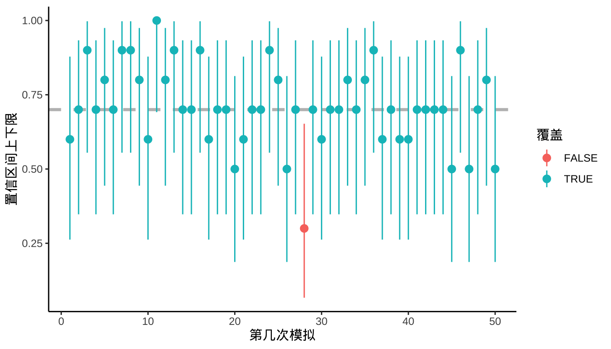
图中，横坐标表示模拟次数 \(n\) ，纵坐标表示对应的成功概率 \(p\) ，线段端点表示置信区间上下限。
8.3.2 假设检验
假设检验的目的是做决策，决策是有风险的，是可能发生错误的，为了控制犯第一类错误的可能性，我们用 P 值描述检验统计假设的不确定性，用功效描述检验方法的优劣。对同一个统计假设，同一组数据，不同的检验方法有不同的 P 值，本质是检验方法的功效不同。
ggpval 在图上添加检验的 P 值结果，ggsignif (Constantin 和 Patil 2021) 在图上添加显著性注释。ggstatsplot (Patil 2021) 可视化统计检验、模型的结果，描述功效变化。ggpubr 制作出版级统计图形，两样本均值的比较。
with(
aggregate(
data = PlantGrowth, weight ~ group,
FUN = function(x) c(dist_mean = mean(x), dist_sd = sd(x))
),
cbind.data.frame(weight, group)
) |>
ggplot(aes(x = group, y = dist_mean)) +
geom_col(
position = position_dodge(0.4), width = 0.4, fill = "gray"
) +
geom_errorbar(aes(ymin = dist_mean - dist_sd, ymax = dist_mean + dist_sd),
position = position_dodge(0.4), width = 0.2) +
theme_classic() +
labs(x = "组别", y = "植物干重")
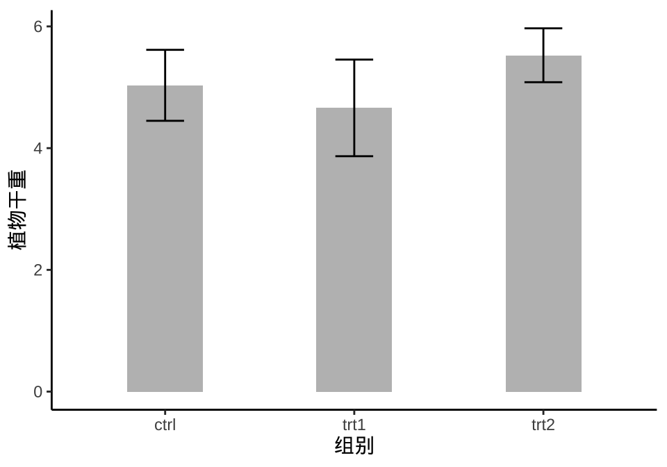
注释
R 3.5.0 以后，函数 aggregate() 的参数 drop 默认值为 TRUE， 表示扔掉未用来分组的变量，聚合返回的是一个矩阵类型的数据对象。
单因素方差分析 oneway.test() 检验各组的方差是否相等。
#>
#> One-way analysis of means (not assuming equal variances)
#>
#> data: weight and group
#> F = 5.181, num df = 2.000, denom df = 17.128, p-value = 0.01739结果显示方差不全部相等，因此，采用函数 t.test(var.equal = FALSE) 来检验数据。图 8.21 展示假设检验的结果，分别标记了 ctrl 与 trt1、trt1 与 trt2 两组 t 检验的结果。
library(ggsignif)
ggplot(data = PlantGrowth, aes(x = group, y = weight)) +
geom_boxplot(width = 0.25) +
geom_jitter(width = 0.15) +
geom_signif(comparisons = list(c("ctrl", "trt1"), c("trt1", "trt2")),
map_signif_level = function(p) sprintf("p = %.2g", p),
textsize = 6, test = "t.test") +
theme_classic() +
coord_cartesian(clip = "off")
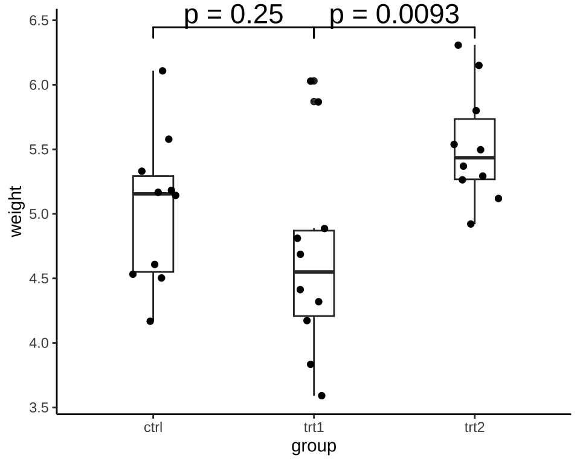
为了了解其中的原理，下面分别使用函数 t.test() 检验数据，结果给出的 P 值与上 图 8.21 完全一样。
#>
#> Welch Two Sample t-test
#>
#> data: weight by group
#> t = 1.1913, df = 16.524, p-value = 0.2504
#> alternative hypothesis: true difference in means between group ctrl and group trt1 is not equal to 0
#> 95 percent confidence interval:
#> -0.2875162 1.0295162
#> sample estimates:
#> mean in group ctrl mean in group trt1
#> 5.032 4.661#>
#> Welch Two Sample t-test
#>
#> data: weight by group
#> t = -3.0101, df = 14.104, p-value = 0.009298
#> alternative hypothesis: true difference in means between group trt1 and group trt2 is not equal to 0
#> 95 percent confidence interval:
#> -1.4809144 -0.2490856
#> sample estimates:
#> mean in group trt1 mean in group trt2
#> 4.661 5.5268.3.3 模型预测
描述模型预测的不确定性，预测的方差、预测区间。线性回归来说，回归线及置信带。代码提交量的趋势拟合
svn_trunk_log <- readRDS(file = "data/svn-trunk-log-2022.rds")
svn_trunk_log$year <- as.integer(format(svn_trunk_log$stamp, "%Y"))
trunk_year <- aggregate(data = svn_trunk_log, revision ~ year, FUN = length)
ggplot(data = trunk_year[trunk_year$year != 1997,], aes(x = year, y = revision)) +
geom_point() +
geom_smooth(aes(color = "LOESS", fill = "LOESS"),
method = "loess", formula = "y~x",
method.args = list(
span = 0.75, degree = 2, family = "symmetric",
control = loess.control(surface = "direct", iterations = 4)
)) +
geom_smooth(aes(color = "GAM", fill = "GAM"),
formula = y ~ s(x, k = 12), method = "gam", se = TRUE) +
geom_smooth(aes(color = "Cubic Spline", fill = "Cubic Spline"),
method = "lm", formula = y ~ splines::bs(x, 3), se = T) +
scale_color_brewer(name = "模型", palette = "Set1") +
scale_fill_brewer(name = "模型", palette = "Set1") +
theme_classic() +
theme(panel.grid.major.y = element_line(colour = "gray90")) +
labs(x = "年份", y = "提交量")
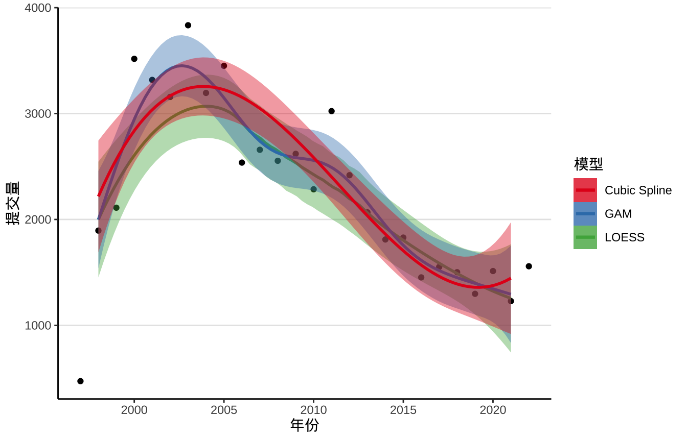
8.3.4 模型诊断
所有模型都是错误的，但有些是有用的。
— 乔治·博克斯
描述模型的敏感性，数据中存在的离群值，变量之间的多重共线性等。引入 Cook 距离、杠杆值、VIF 等来诊断模型。
# 准备数据
state_x77 <- data.frame(state.x77,
state_name = rownames(state.x77), state_region = state.region,
state_abb = state.abb, check.names = FALSE
)
# 线性模型拟合
fit <- lm(`Life Exp` ~ Income + Murder, data = state_x77)
# 模型诊断图
library(ggfortify)
autoplot(fit, which = 1:6, label.size = 3)
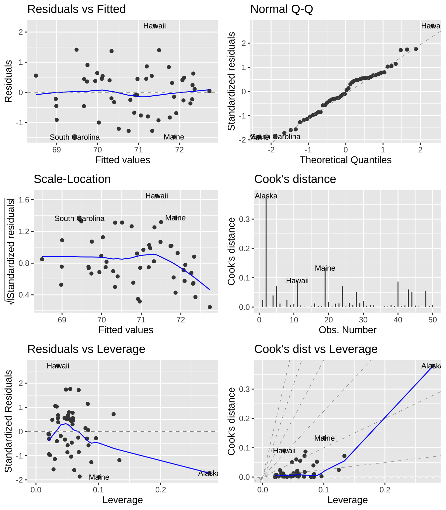
对于复杂的统计模型，比如混合效应模型的诊断，ggPMX 包。
8.3.5 边际效应
继续 state_x77 数据集，以预期寿命（1969-1971 年统计）为因变量，Income 人均收入（1974 年）和 Murder 谋杀和非过失杀人率（单位：十万分之一，1976 年统计）为自变量，建立线性模型如下：
\[ \text{Life Exp} = \alpha + \beta_1 \text{Income} + \beta_2 \text{Murder} + \epsilon \tag{8.2}\]
在 R 语言中，可以用函数 lm() 拟合上述模型，
模型拟合结果输出如下：
#>
#> Call:
#> lm(formula = `Life Exp` ~ Income + Murder, data = state_x77)
#>
#> Residuals:
#> Min 1Q Median 3Q Max
#> -1.48301 -0.62099 -0.01714 0.47768 2.20831
#>
#> Coefficients:
#> Estimate Std. Error t value Pr(>|t|)
#> (Intercept) 71.2255815 0.9673952 73.626 < 2e-16 ***
#> Income 0.0003705 0.0001973 1.878 0.0666 .
#> Murder -0.2697594 0.0328408 -8.214 1.22e-10 ***
#> ---
#> Signif. codes: 0 '***' 0.001 '**' 0.01 '*' 0.05 '.' 0.1 ' ' 1
#>
#> Residual standard error: 0.8259 on 47 degrees of freedom
#> Multiple R-squared: 0.637, Adjusted R-squared: 0.6215
#> F-statistic: 41.23 on 2 and 47 DF, p-value: 4.561e-11ggeffects 描述单个自变量的作用，人均收入对预期寿命的边际效应